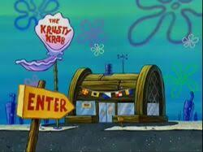

A série mostra as aventuras do Bob Esponja na Fenda do Biquíni, principalmente no Siri Cascudo, restaurante onde ele trabalha fazendo hambúrgueres de siri e onde acontecem muitas confusões com Seu Siriguejo e Plankton.
Bob Esponja, criado pelo biólogo marinho Stephen Hillenburg em 1999, foi originalmente concebido como "SpongeBoy" e deveria ser uma esponja do mar natural. A Fenda do Biquíni foi inspirada em um atol real, e os personagens refletem a vida marinha com toques de surrealismo, como o restaurante Siri Cascudo modelado após uma armadilha de lagosta.